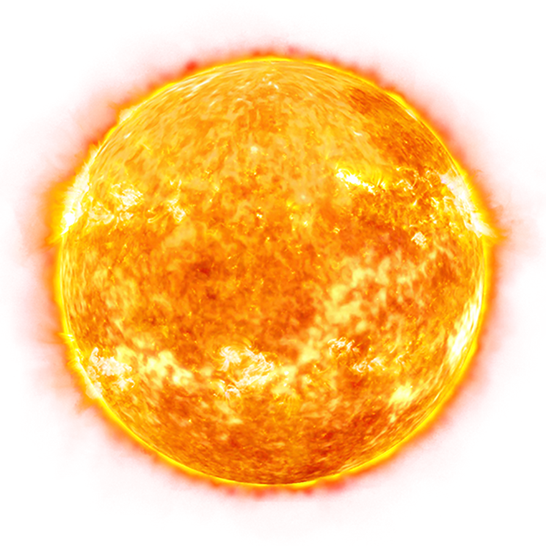

The sun is a star at the center of our Solar System. It is much larger than we can ever imagine, and provides the light and heat that allows life on Earth to thrive.
Most people think that the Sun stays stationary while the planets rotate around it. This might be a natural misconception due to the images shown of our solar system. The Sun flies through space at over 828,000 km/h. The Sun's mass causes the planets to rotate around it while it does this. While the Sun is flying, it is orbiting the Milky Way Galaxy. At the center of our galaxy is a supermassive black hole known as Sagittarius A. The Sun completes one orbit around the milky way every 250 Million Years.
Most people also think that the Sun will explode when its time is up. This isn't true. The Sun isn't big enough to go out in a massive supernova. As the sun runs out of hydrogen in its core, it will begin to fuse helium into carbon and oxygen. This will make it swell into a before shrinking into a super dense and hot white dwarf. This will cool over millions of years before becoming a black dwarf.